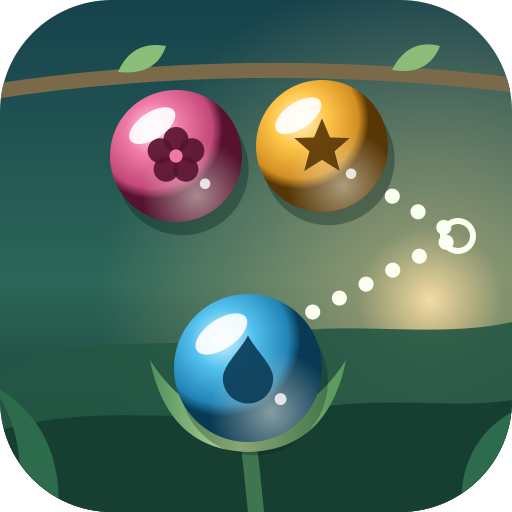

Dewlit ArcEffective date: 14 November 2026
Dewlit Arc is an HTML5 aim-and-pop bubble shooter published by Matheus da Silveira Mello, an individual developer based in Portugal. Aim dew beads at a hanging cluster, match colours to pop them and drop groups that lose their connection to the branch, in a garden rendered with Canvas 2D. The game is available on third-party platforms such as CrazyGames and YouTube Playables, and as a local build.
- Aim dew beads, match three of a colour and clear the garden before the mist lowers it to the floor.
- Continue a saved garden, progress through twelve stages and further seeded gardens, build combos and use one free bead swap per garden.
- Play a daily garden based on your device’s UTC date, or voluntarily share a challenge link with a seed, score, shots, garden type and level (CrazyGames and local builds).
- Adjust music and sound effects, synthesized locally with Web Audio.
No game account, no analytics, no purchases and no ads requested by the game; live ads are disabled.
Privacy. A small JSON save keeps your garden, progression, best score, lifetime play counts, daily record and audio settings in browser local storage or the platform’s save service. A voluntary challenge link contains only a seed, claimed score, shot count, garden type and level. You select and copy the text yourself; the game never reads or writes the clipboard. See the privacy policy.
Platforms. Third-party platforms process data under their own policies. YouTube Playables also receives the saved integer personal-best score. Browser-local saves remain until you or your browser clear the game’s site data; platform saves follow the platform’s controls.
Support
Questions or bug reports: matheus.mello.developer@gmail.com. Please mention "Dewlit Arc".